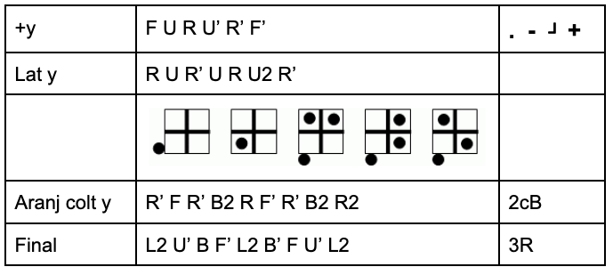

Solve Rubik's cube
Solve 3x3x3 cube
* first steps are skipped because they are intuitive

Solve 4x4x4 cube
* first steps are skipped because they are intuitive
* then solve as the 3x3 cube
Parities:
-
OLL Parity
-
Flip top side margin
r U2 x r U2 r U2 r' U2 l U2 r' U2 r U2 r' U2 r'
-
Flip top side center
2R' U2 2L F2 2L' F2 2R2 U2 2R U2 F2 2R2 F2
-
PLL Parity
-
Switch top side by side centers
2R2 U2 2R2 u2 2R2 u2
-
Adiacent corner swap
R U R' U' R' F R2 U' R' U' R U R' F'
-
Diagonal corner swap
F R U' R' U' R U R' F' R U R' U' R' F R F'
-
Switch top adiacent centers
R' U R U' - 2R U2 2R u2 2R 2U - U R' U' R
Legend:
-
L - left, R - right, F - front, B - Back, U- up, D - down
-
r - (small letter) turn both right sides (double layer turn)
-
x - the new face is the bottom
-
2R - turn the second right layer (internal right layer)